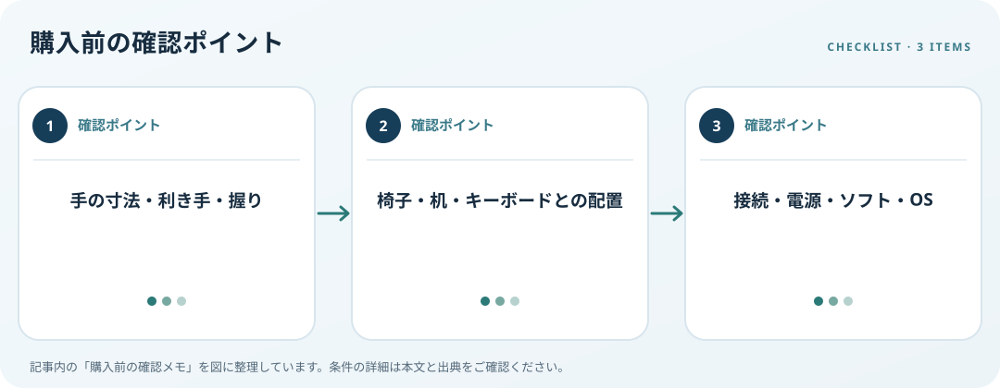

手の寸法、左右の手、握りやボタン位置、PCとの接続を確認します。この記事では仕様の確認順を整理します。

手に合う形を調べる
縦型という名称だけでは握りやすさは分かりません。手の長さ・幅、本体の高さ、親指の置き場、左右どちらの手用かを寸法図で照合します。ボタンへ無理なく指が届くか、手首や前腕が机の縁に当たらないかを試せる時に確かめます。
作業姿勢と一緒に評価
OSHAはマウスをキーボードの近くに置き、手を自然に届かせることや、手の大きさに合う入力機器を選ぶ視点を示しています。椅子や机の高さで前腕の位置は変わるため、機器だけで姿勢や健康上の効果が決まると考えず、配置全体を見直します。
ボタンと無線条件を確認
Bluetooth、USBレシーバー、有線の接続方式、電池または充電、専用ソフト、対応OSを確認します。追加ボタンは必要な操作に割り当てられるか、ソフトを使えない環境でも基本操作できるかを調べます。Windowsの主ボタンや速度設定も調整できます。
購入前の確認メモ
- 手の寸法・利き手・握り
- 椅子・机・キーボードとの配置
- 接続・電源・ソフト・OS
この記事は出典の公開情報を購入前の確認項目に整理したもので、特定商品の使用・実測・レビュー・ランキング・価格・在庫の調査は行っていません。購入時には利用機器メーカーの最新仕様をご確認ください。
出典
- Pointer/Mouse — OSHA（確認日: 2026-10-10）
- Change mouse settings — Microsoft（確認日: 2026-10-10）
- Workstation Evaluation — OSHA（確認日: 2026-10-10）